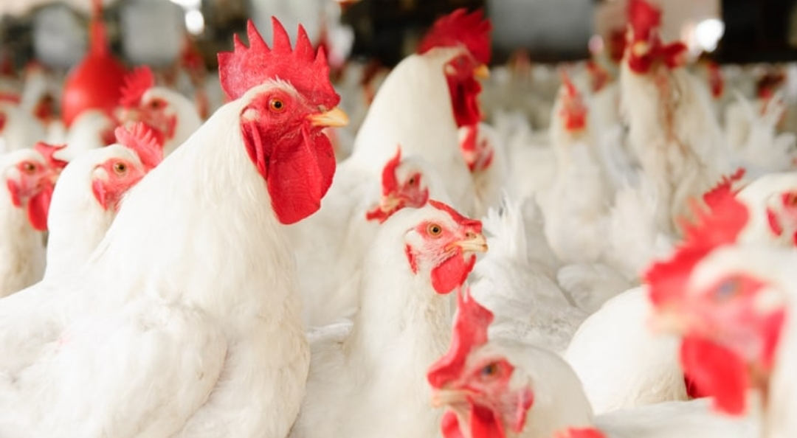
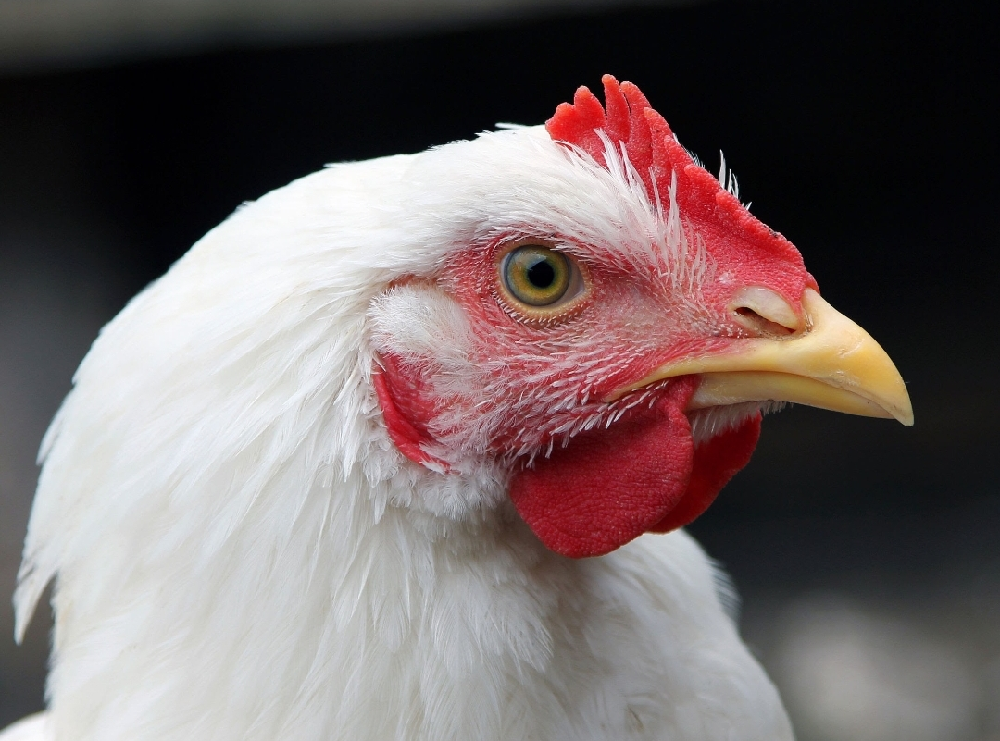
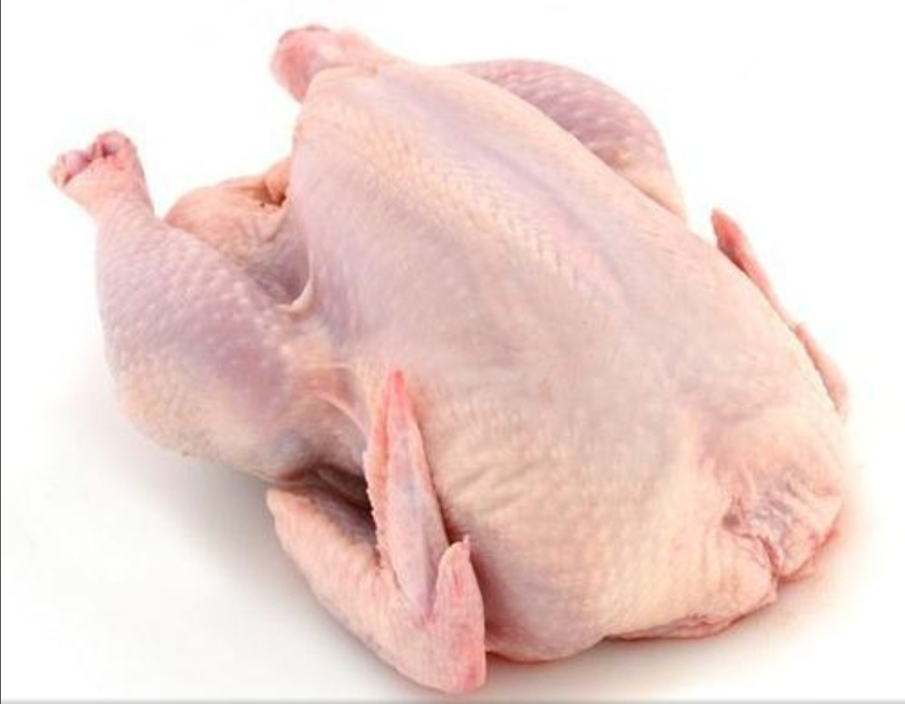
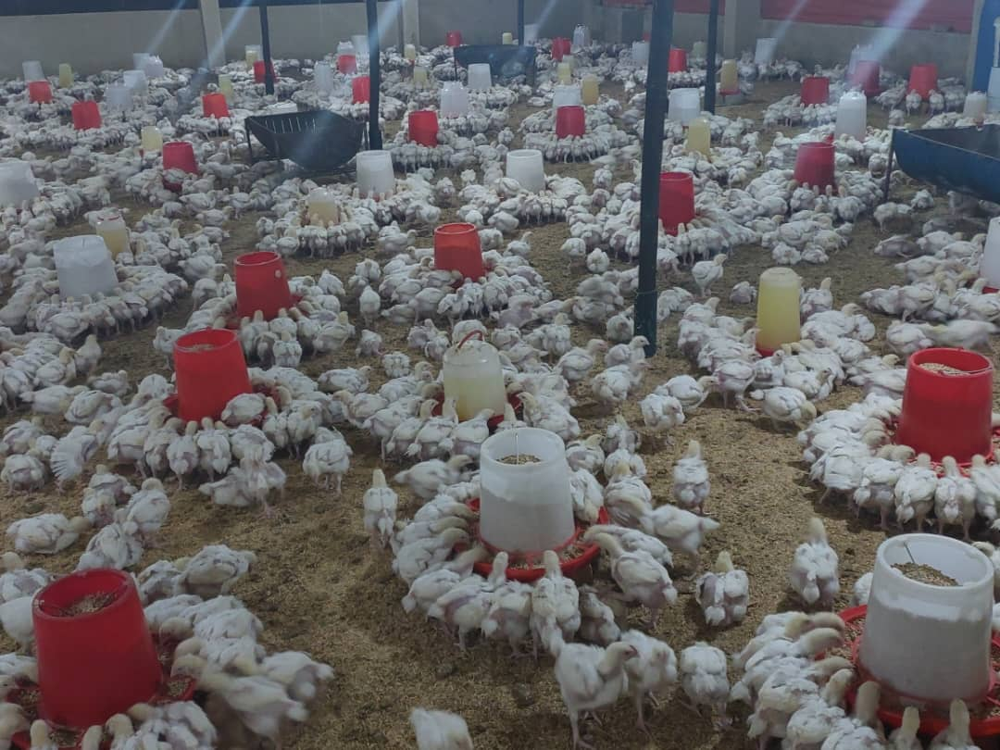
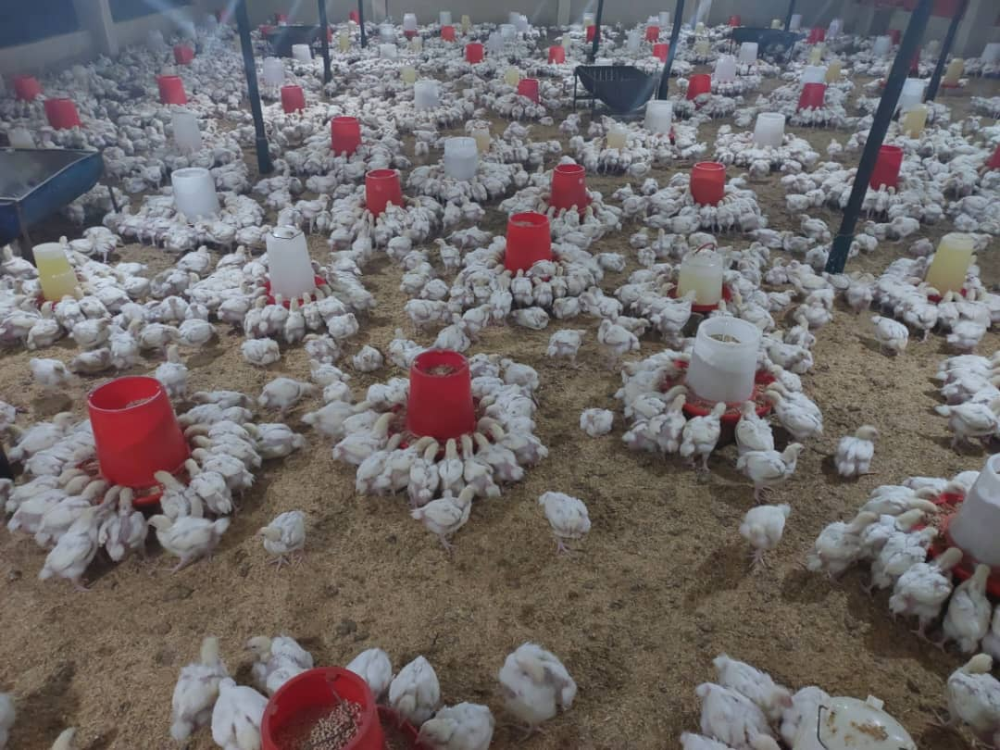

Baithill Chickens
Baithill Chickens


Delicious and Fresh Farm Chicken
Welcome to Baithill Chicken Company! We offer chickens on Retail and Wholesale price. Our chickens are available on both dressed and live. No limit to the number of chickens to be purchased
Our Products
- Live Chickens
- Dressed Chickens



About Us
We are a leading supplier of high-quality chicken products in the market. Our chickens are raised in a healthy and natural environment, ensuring superior taste and freshness. Are you in search of the perfect poultry option that guarantees a superior culinary experience while supporting sustainable farming practices? Look no further! Our farm proudly presents a flock of chickens that will elevate your meals to new heights.
Here's why our chickens deserve a place on your plate:
1. Unparalleled Quality:
Our chickens are bred with care, raised in spacious and clean environments, and fed a wholesome, natural diet. The result? Tender, succulent meat with a rich flavour profile that will delight your taste buds and impress your guests. We prioritize quality at every step to ensure you get only quality chicken.
2. Ethical and Sustainable Practices:
As passionate farmers, we take great pride in our commitment to ethical and sustainable farming practices. Our chickens are raised in an environment that respects their well-being, allowing them to exhibit their natural behaviours. We prioritize animal welfare, minimizing stress and promoting a healthy life for our birds. Moreover, our sustainable farming methods protect the environment, ensuring a greener future for generations to come.
3. Traceability and Transparency:
We believe in fostering trust and confidence in our buyers. That's why we maintain complete traceability of our chickens, from hatch to sale. Our dedication to transparency means you can rest assured knowing where your food comes from and how it's produced.
4. Health and Nutrition:
Our chickens are free from antibiotics and hormones, allowing you to prioritize your family's health. By choosing our chickens, you're making a conscious decision to provide your loved ones with a lean and protein-rich source of nutrition. Our birds are a healthy choice for those seeking a balanced diet without compromising on taste.
5. Support Local Farmers:
By purchasing our chickens, you're not just investing in exceptional quality; you're also supporting local farmers who work tirelessly to provide the best possible product. Your choice makes a positive impact on our community, helping us sustain our farming traditions and livelihoods.
We wholeheartedly believe that our chickens will exceed your expectations, both in taste and in ethical sourcing. Join the growing community of satisfied customers who have made our chickens an integral part of their culinary journey.
Don't wait any longer! Treat yourself to the finest poultry experience by choosing our farm-fresh chickens. To place an order or learn more, visit our website or call us at +263774126013. We can't wait to share the unmatched flavours of our chickens with you!
Godfrey Chanakira
Baithill Chicken Company